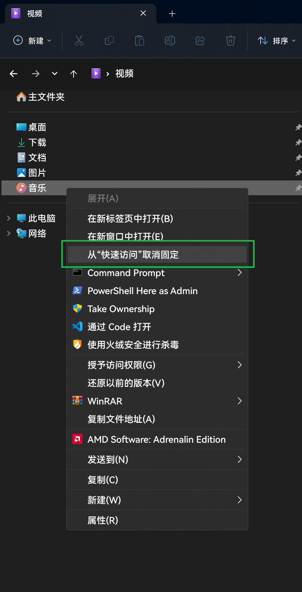

最终显示效果如图：
# 背景
最近将笔记本装上了 Phoenix 精简的系统 X-lite Win11 ，其默认显示语言为英文，可以下载安装中文语言包，但是貌似有以下几个问题：
- 会出现方块（乱码）
- 微软拼音无法启动（通过临时启动
ctfmon.exe或将其设为开机启动解决） - 中文字相较原版 win11 镜像难看（细小不齐等）
- 命令行中文字乱码（解决方法）
# 走过的弯路
- 使用该精简内置的优化工具
Winaero Tweaker修改为HarmonyOS_Sans_Medium.ttf字体，结果发现只能修改只对英文生效。 - 通过修改注册表，参见：https://blog.csdn.net/amoscn/article/details/106224359
# 正确姿势
使用 noMeiryoUI (下载地址) 进行修改，字体使用 HarmonyOS_Sans_SC_Medium.ttf 。你就能如愿以偿了。以下是我的配置截图：
2023/1/1 日更新，从上图可以看到， noMeiryoUI (下载地址) 并不支持 窗口标题 字体的修改，这时我们可以用 Winaero Tweaker 来进行，可以说两者互为补充。
# Everything 的黑色主题美化与配置备份
[Everything] | |
run_as_admin=0 | |
allow_http_server=1 | |
allow_etp_server=1 | |
window_x=0 | |
window_y=0 | |
window_wide=1928 | |
window_high=2084 | |
maximized=1 | |
minimized=0 | |
fullscreen=0 | |
ontop=0 | |
alpha=255 | |
match_whole_word=0 | |
match_path=0 | |
match_case=0 | |
match_diacritics=0 | |
match_regex=0 | |
view=0 | |
thumbnail_size=64 | |
thumbnail_fill=0 | |
min_thumbnail_size=32 | |
max_thumbnail_size=256 | |
medium_thumbnail_size=64 | |
large_thumbnail_size=128 | |
extra_large_thumbnail_size=256 | |
thumbnail_load_size=0 | |
allow_multiple_windows=0 | |
allow_multiple_instances=0 | |
run_in_background=1 | |
show_in_taskbar=1 | |
show_tray_icon=1 | |
minimize_to_tray=0 | |
toggle_window_from_tray_icon=0 | |
alternate_row_color=1 | |
show_mouseover=1 | |
check_for_updates_on_startup=0 | |
beta_updates=0 | |
show_highlighted_search_terms=1 | |
text_size=0 | |
hide_empty_search_results=1 | |
clear_selection_on_search=1 | |
show_focus_on_search=0 | |
new_window_key=0 | |
show_window_key=0 | |
toggle_window_key=602 | |
language=0 | |
show_selected_item_in_statusbar=1 | |
statusbar_selected_item_format= | |
show_size_in_statusbar=1 | |
statusbar_size_format=0 | |
open_folder_command2= | |
open_file_command2= | |
open_path_command2= | |
explore_command2= | |
explore_path_command2= | |
window_title_format= | |
taskbar_notification_title_format= | |
instance_name= | |
translucent_selection_rectangle_alpha=70 | |
min_zoom=-6 | |
max_zoom=27 | |
context_menu_type=0 | |
auto_include_fixed_volumes=1 | |
auto_include_removable_volumes=0 | |
auto_remove_offline_ntfs_volumes=1 | |
auto_remove_moved_ntfs_volumes=1 | |
auto_include_fixed_refs_volumes=1 | |
auto_include_removable_refs_volumes=0 | |
auto_remove_offline_refs_volumes=1 | |
auto_remove_moved_refs_volumes=1 | |
find_mount_points_on_removable_volumes=0 | |
last_export_type=0 | |
max_threads=0 | |
reuse_threads=1 | |
find_subfolders_and_files_max_threads=0 | |
single_parent_context_menu=0 | |
auto_size_1=512 | |
auto_size_2=640 | |
auto_size_3=768 | |
auto_size_aspect_ratio_x=9 | |
auto_size_aspect_ratio_y=7 | |
auto_size_width_only=0 | |
auto_size_path_x=1 | |
auto_size_path_y=2 | |
sticky_vscroll_bottom=1 | |
last_options_page=5 | |
draw_focus_rect=1 | |
date_format= | |
time_format= | |
listview_item_high=0 | |
single_click_open=0 | |
underline_icon_titles=0 | |
icons_only=0 | |
auto_scroll_repeat_delay=250 | |
auto_scroll_repeat_rate=50 | |
open_many_files_warning_threshold=16 | |
debug=0 | |
debug_log=0 | |
verbose=0 | |
lvm=1 | |
ipc=1 | |
home_match_case=0 | |
home_match_whole_word=0 | |
home_match_path=0 | |
home_match_diacritics=0 | |
home_regex=0 | |
home_search=1 | |
home_filter=0 | |
home_sort=0 | |
home_view=0 | |
home_index=1 | |
allow_multiple_windows_from_tray=0 | |
single_click_tray=1 | |
close_on_execute=0 | |
double_click_path=1 | |
update_display_after_scroll=0 | |
update_display_after_mask=1 | |
auto_scroll_view=1 | |
double_quote_copy_as_path=1 | |
snap=0 | |
snaplen=10 | |
rename_select_filepart_only=0 | |
rename_move_caret_to_selection_end=0 | |
rename_nav=0 | |
search_edit_move_caret_to_selection_end=0 | |
search_edit_drag_accept_files=0 | |
select_search_on_mouse_click=1 | |
focus_search_on_activate=1 | |
reset_vscroll_on_search=1 | |
wrap_focus=0 | |
load_icon_priority=0 | |
load_thumbnail_priority=0 | |
load_fileinfo_priority=0 | |
always_request_all_fileinfo=0 | |
header_high=0 | |
hide_on_close=0 | |
winmm=0 | |
menu_escape_amp=1 | |
menu_folders=0 | |
menu_folder_separator= | |
menu_items_per_column=0 | |
new_inherit=1 | |
full_row_select=0 | |
tray_show_command_line= | |
dpi=96 | |
ctrl_mouse_wheel_action=1 | |
allow_open=1 | |
allow_context_menu=1 | |
allow_delete=1 | |
allow_rename=1 | |
allow_cut=1 | |
allow_copy=1 | |
allow_paste=1 | |
allow_drag_drop=1 | |
auto_column_widths=0 | |
hotkey_explorer_path_search=0 | |
get_key_name_text=1 | |
paste_new_line_op=0 | |
fast_ascii_search=1 | |
match_path_when_search_contains_path_separator=1 | |
allow_literal_operators=0 | |
allow_round_bracket_parenthesis=0 | |
expand_environment_variables=0 | |
search_as_you_type=1 | |
always_update_query_on_search_parameter_change=0 | |
convert_forward_slash_to_backslash=0 | |
match_whole_filename_when_using_wildcards=1 | |
operator_precedence=0 | |
replace_exact_trailing_star_dot_star_with_star=1 | |
allow_exclamation_point_not=1 | |
search_command_prefix= | |
auto_complete_search_command=1 | |
double_buffer=1 | |
search= | |
show_number_of_results_with_selection=0 | |
date_descending_first=0 | |
size_descending_first=0 | |
size_format=0 | |
alpha_select=0 | |
tooltips=1 | |
listview_tooltips=1 | |
show_detailed_listview_tooltips=1 | |
rtl_listview_edit=0 | |
force_path_ltr_order=1 | |
force_path_left_align=1 | |
date_time_order=0 | |
date_time_align=1 | |
size_align=3 | |
invert_layout=0 | |
update_layout_on_input_language_change=0 | |
control_shift_action=3 | |
change_search_rtl_reading_action=3 | |
invert_layout_action=3 | |
bookmark_remember_case=1 | |
bookmark_remember_wholeword=1 | |
bookmark_remember_path=1 | |
bookmark_remember_diacritic=1 | |
bookmark_remember_regex=1 | |
bookmark_remember_sort=1 | |
bookmark_remember_view=1 | |
bookmark_remember_filter=1 | |
bookmark_remember_index=1 | |
bookmark_remember_search=1 | |
bookmark_organize_x=0 | |
bookmark_organize_y=0 | |
bookmark_organize_wide=0 | |
bookmark_organize_high=0 | |
exclude_list_enabled=1 | |
exclude_hidden_files_and_folders=0 | |
exclude_system_files_and_folders=0 | |
include_only_files= | |
exclude_files= | |
db_location= | |
db_multi_user_filename=0 | |
db_compress=0 | |
index_size=1 | |
fast_size_sort=1 | |
index_date_created=0 | |
fast_date_created_sort=0 | |
index_date_modified=1 | |
fast_date_modified_sort=1 | |
index_date_accessed=0 | |
fast_date_accessed_sort=0 | |
index_attributes=0 | |
fast_attributes_sort=0 | |
index_folder_size=1 | |
fast_path_sort=1 | |
fast_extension_sort=0 | |
extended_information_cache_monitor=1 | |
db_update_thread_priority=-15 | |
index_recent_changes=1 | |
refs_file_id_extd_directory_info_buffer_size=0 | |
folder_update_thread_mode_background=1 | |
folder_update_rescan_asap=1 | |
monitor_thread_mode_background=1 | |
monitor_retry_delay=30000 | |
monitor_update_delay=1000 | |
monitor_pause=0 | |
usn_record_filter=0xffffffff | |
cancel_delay=0x000003e8 | |
allow_ntfs_open_file_by_id=1 | |
editor_x=0 | |
editor_y=0 | |
editor_wide=0 | |
editor_high=0 | |
editor_maximized=0 | |
file_list_relative_paths=0 | |
rename_x=0 | |
rename_y=0 | |
rename_wide=0 | |
rename_high=0 | |
rename_match_case=0 | |
rename_regex=0 | |
advanced_copy_to_x=0 | |
advanced_copy_to_y=0 | |
advanced_copy_to_wide=0 | |
advanced_copy_to_high=0 | |
advanced_copy_to_match_case=0 | |
advanced_copy_to_regex=0 | |
advanced_move_to_x=0 | |
advanced_move_to_y=0 | |
advanced_move_to_wide=0 | |
advanced_move_to_high=0 | |
advanced_move_to_match_case=0 | |
advanced_move_to_regex=0 | |
advanced_search_x=0 | |
advanced_search_y=0 | |
advanced_search_wide=0 | |
advanced_search_high=0 | |
advanced_search_page_y_offset=0 | |
advanced_search_focus_id=0 | |
advanced_search_warnings=1 | |
max_recv_size=8388608 | |
display_full_path_name=0 | |
size_tiny=10240 | |
size_small=102400 | |
size_medium=1048576 | |
size_large=16777216 | |
size_huge=134217728 | |
themed_toolbar=1 | |
show_copy_name=2 | |
show_copy_path=2 | |
show_copy_full_name=2 | |
show_open_path=2 | |
show_explore=2 | |
show_explore_path=2 | |
copy_path_folder_append_backslash=0 | |
custom_verb01= | |
custom_verb02= | |
custom_verb03= | |
custom_verb04= | |
custom_verb05= | |
custom_verb06= | |
custom_verb07= | |
custom_verb08= | |
custom_verb09= | |
custom_verb10= | |
custom_verb11= | |
custom_verb12= | |
filters_visible=1 | |
filters_wide=1087 | |
filters_right_align=1 | |
filters_tab_stop=0 | |
filter=EVERYTHING | |
filter_everything_name= | |
filter_organize_x=0 | |
filter_organize_y=0 | |
filter_organize_wide=0 | |
filter_organize_high=0 | |
preview_visible=0 | |
preview_x=640 | |
preview_tab_stop=0 | |
preview_mag_filter=0 | |
preview_min_filter=0 | |
preview_fill=0 | |
show_preview_handlers_in_preview_pane=0 | |
preview_load_size=0 | |
preview_context=0x00000000 | |
preview_release_handler_on_clear=0 | |
sort=Size | |
sort_ascending=0 | |
always_keep_sort=0 | |
index=0 | |
index_file_list= | |
index_etp_server= | |
index_link_type=1 | |
status_bar_visible=1 | |
select_search_on_focus_mode=1 | |
select_search_on_set_mode=2 | |
search_history_enabled=0 | |
run_history_enabled=1 | |
search_history_days_to_keep=90 | |
run_history_days_to_keep=90 | |
search_history_keep_forever=1 | |
run_history_keep_forever=1 | |
search_history_always_suggest=0 | |
search_history_always_suggest_extend_toolbar=0 | |
search_history_visible_count_max=12 | |
search_history_always_suggest_visible_count_max=1 | |
search_history_show_all_max=256 | |
search_history_suggestion_max=256 | |
search_history_show_all_sort=2 | |
search_history_suggestion_sort=1 | |
search_history_show_above=0 | |
search_history_sort=2 | |
search_history_sort_ascending=0 | |
search_history_x=0 | |
search_history_y=0 | |
search_history_wide=0 | |
search_history_high=0 | |
search_history_column_search_wide=208 | |
search_history_column_search_order=0 | |
search_history_column_count_wide=128 | |
search_history_column_count_order=1 | |
search_history_column_date_wide=128 | |
search_history_column_date_order=2 | |
etp_server_enabled=0 | |
etp_server_bindings= | |
etp_server_port=21 | |
etp_server_username= | |
etp_server_password= | |
etp_server_welcome_message= | |
etp_server_log_file_name= | |
etp_server_logging_enabled=1 | |
etp_server_log_max_size=4194304 | |
etp_server_log_delta_size=524288 | |
etp_server_allow_file_download=1 | |
ftp_allow_port=1 | |
ftp_check_data_connection_ip=1 | |
http_server_enabled=0 | |
http_server_bindings= | |
http_title_format= | |
http_server_port=80 | |
http_server_username= | |
http_server_password= | |
http_server_home= | |
http_server_default_page= | |
http_server_log_file_name= | |
http_server_logging_enabled=1 | |
http_server_log_max_size=4194304 | |
http_server_log_delta_size=524288 | |
http_server_allow_file_download=1 | |
http_server_items_per_page=32 | |
http_server_show_drive_labels=0 | |
http_server_strings= | |
service_pipe_name= | |
name_column_pos=0 | |
name_column_width=785 | |
path_column_visible=1 | |
path_column_pos=1 | |
path_column_width=875 | |
size_column_visible=1 | |
size_column_pos=2 | |
size_column_width=103 | |
extension_column_visible=0 | |
extension_column_pos=3 | |
extension_column_width=144 | |
type_column_visible=0 | |
type_column_pos=4 | |
type_column_width=144 | |
last_write_time_column_visible=1 | |
last_write_time_column_pos=3 | |
last_write_time_column_width=229 | |
creation_time_column_visible=0 | |
creation_time_column_pos=6 | |
creation_time_column_width=229 | |
date_accessed_column_visible=0 | |
date_accessed_column_pos=7 | |
date_accessed_column_width=229 | |
attribute_column_visible=0 | |
attribute_column_pos=8 | |
attribute_column_width=105 | |
date_recently_changed_column_visible=0 | |
date_recently_changed_column_pos=9 | |
date_recently_changed_column_width=229 | |
run_count_column_visible=0 | |
run_count_column_pos=10 | |
run_count_column_width=144 | |
date_run_column_visible=0 | |
date_run_column_pos=11 | |
date_run_column_width=229 | |
file_list_filename_column_visible=0 | |
file_list_filename_column_pos=12 | |
file_list_filename_column_width=144 | |
translucent_selection_rectangle_background_color= | |
translucent_selection_rectangle_border_color= | |
thumbnail_mouseover_border_color= | |
preview_background_color= | |
ntfs_volume_guids="\\\\?\\Volume{b016f949-4f46-447e-a2a5-a5f95cfd4d85}","\\\\?\\Volume{a6dfb08e-a35a-4003-9797-32c7da11df8f}" | |
ntfs_volume_paths="C:","D:" | |
ntfs_volume_roots="","" | |
ntfs_volume_includes=1,1 | |
ntfs_volume_load_recent_changes=0,0 | |
ntfs_volume_include_onlys="","" | |
ntfs_volume_monitors=1,1 | |
refs_volume_guids= | |
refs_volume_paths= | |
refs_volume_roots= | |
refs_volume_includes= | |
refs_volume_load_recent_changes= | |
refs_volume_include_onlys= | |
refs_volume_monitors= | |
filelists= | |
filelist_monitor_changes= | |
folders= | |
folder_monitor_changes= | |
folder_buffer_size_list= | |
folder_rescan_if_full_list= | |
folder_update_types= | |
folder_update_days= | |
folder_update_ats= | |
folder_update_intervals= | |
folder_update_interval_types= | |
exclude_folders= | |
connect_history_hosts= | |
connect_history_ports= | |
connect_history_usernames= | |
connect_history_link_types= | |
etp_client_rewrite_patterns= | |
etp_client_rewrite_substitutions= | |
file_new_search_window_keys=334 | |
file_open_file_list_keys=335 | |
file_close_file_list_keys= | |
file_close_keys=343,27 | |
file_export_keys=339 | |
file_copy_full_name_to_clipboard_keys=9539 | |
file_copy_path_to_clipboard_keys= | |
file_set_run_count_keys= | |
file_create_shortcut_keys= | |
file_delete_keys=8238 | |
file_delete_permanently_keys=9262 | |
file_edit_keys= | |
file_open_keys=8205 | |
file_open_selection_and_close_everything_keys= | |
file_explore_path_keys= | |
file_open_new_keys= | |
file_open_path_keys=8461 | |
file_open_with_keys= | |
file_open_with_default_verb_keys= | |
file_play_keys= | |
file_preview_keys= | |
file_print_keys= | |
file_print_to_keys= | |
file_properties_keys=8717 | |
file_read_extended_information_keys=8517 | |
file_rename_keys=8305 | |
file_run_as_keys= | |
file_exit_keys=337 | |
file_copy_name_to_clipboard_keys= | |
file_open_selection_and_do_not_close_everything_keys= | |
file_open_most_run_keys= | |
file_open_last_run_keys= | |
file_custom_verb_1_keys= | |
file_custom_verb_2_keys= | |
file_custom_verb_3_keys= | |
file_custom_verb_4_keys= | |
file_custom_verb_5_keys= | |
file_custom_verb_6_keys= | |
file_custom_verb_7_keys= | |
file_custom_verb_8_keys= | |
file_custom_verb_9_keys= | |
file_custom_verb_10_keys= | |
file_custom_verb_11_keys= | |
file_custom_verb_12_keys= | |
indexes_folders_rescan_all_now_keys= | |
indexes_force_rebuild_keys= | |
edit_cut_keys=8536 | |
edit_copy_keys=8515,8493 | |
edit_paste_keys=8534,9261 | |
edit_select_all_keys=8513 | |
edit_invert_selection_keys= | |
edit_copy_to_folder_keys= | |
edit_move_to_folder_keys= | |
edit_advanced_advanced_copy_to_folder_keys= | |
edit_advanced_advanced_move_to_folder_keys= | |
view_filters_keys= | |
view_preview_keys=592 | |
view_status_bar_keys= | |
view_details_keys=1334 | |
view_medium_thumbnails_keys=1331 | |
view_large_thumbnails_keys=1330 | |
view_extra_large_thumbnails_keys=1329 | |
view_increase_thumbnail_size_keys=1467 | |
view_decrease_thumbnail_size_keys=1469 | |
view_window_size_small_keys=561 | |
view_window_size_medium_keys=562 | |
view_window_size_large_keys=563 | |
view_window_size_auto_fit_keys=564 | |
view_zoom_zoom_in_keys=443 | |
view_zoom_zoom_out_keys=445 | |
view_zoom_reset_keys=304,352 | |
view_go_to_back_keys=549,166 | |
view_go_to_forward_keys=551,167 | |
view_go_to_home_keys=548 | |
view_go_to_show_all_history_keys=1352,328 | |
view_sort_by_name_keys=305 | |
view_sort_by_path_keys=306 | |
view_sort_by_size_keys=307 | |
view_sort_by_extension_keys=308 | |
view_sort_by_type_keys=309 | |
view_sort_by_date_modified_keys=310 | |
view_sort_by_date_created_keys=311 | |
view_sort_by_attributes_keys=312 | |
view_sort_by_file_list_filename_keys= | |
view_sort_by_run_count_keys= | |
view_sort_by_date_run_keys= | |
view_sort_by_date_recently_changed_keys=313 | |
view_sort_by_date_accessed_keys= | |
view_sort_by_ascending_keys= | |
view_sort_by_descending_keys= | |
view_refresh_keys=116 | |
view_fullscreen_keys=122 | |
view_toggle_ltrrtl_direction_keys= | |
view_on_top_never_keys= | |
view_on_top_always_keys=340 | |
view_on_top_while_searching_keys= | |
search_match_case_keys=329 | |
search_match_whole_word_keys=322 | |
search_match_path_keys=341 | |
search_match_diacritics_keys=333 | |
search_enable_regex_keys=338 | |
search_advanced_search_keys= | |
search_add_to_filters_keys= | |
search_organize_filters_keys=1350 | |
bookmarks_add_to_bookmarks_keys=324 | |
bookmarks_organize_bookmarks_keys=1346 | |
tools_options_keys=336 | |
tools_console_keys=448 | |
tools_file_list_editor_keys= | |
tools_connect_to_etp_server_keys= | |
tools_disconnect_from_etp_server_keys= | |
help_everything_help_keys=112 | |
help_search_syntax_keys= | |
help_regex_syntax_keys= | |
help_command_line_options_keys= | |
help_everything_website_keys= | |
help_check_for_updates_keys= | |
help_about_everything_keys=368 | |
help_donate_keys= | |
search_edit_focus_search_edit_keys=326,114,580 | |
search_edit_delete_previous_word_keys=4360 | |
search_edit_auto_complete_search_keys=4384 | |
search_edit_show_search_history_keys= | |
search_edit_show_all_search_history_keys=4646,4648 | |
result_list_item_up_keys=8230,4134 | |
result_list_item_down_keys=8232,4136 | |
result_list_page_up_keys=8225,4129 | |
result_list_page_down_keys=8226,4130 | |
result_list_start_of_list_keys=8228 | |
result_list_end_of_list_keys=8227 | |
result_list_item_up_extend_keys=9254,5158 | |
result_list_item_down_extend_keys=9256,5160 | |
result_list_page_up_extend_keys=9249,5153 | |
result_list_page_down_extend_keys=9250,5154 | |
result_list_start_of_list_extend_keys=9252 | |
result_list_end_of_list_extend_keys=9251 | |
result_list_focus_up_keys=8486,4390 | |
result_list_focus_down_keys=8488,4392 | |
result_list_focus_page_up_keys=8481,4385 | |
result_list_focus_page_down_keys=8482,4386 | |
result_list_focus_start_of_list_keys=8484 | |
result_list_focus_end_of_list_keys=8483 | |
result_list_focus_up_extend_keys=9510,5414 | |
result_list_focus_down_extend_keys=9512,5416 | |
result_list_focus_page_up_extend_keys=9505,5409 | |
result_list_focus_page_down_extend_keys=9506,5410 | |
result_list_focus_start_of_list_extend_keys=9508 | |
result_list_focus_end_of_list_extend_keys=9507 | |
result_list_focus_result_list_keys= | |
result_list_focus_highest_run_count_result_keys= | |
result_list_focus_last_run_result_keys= | |
result_list_toggle_path_column_keys= | |
result_list_toggle_size_column_keys= | |
result_list_toggle_extension_column_keys= | |
result_list_toggle_type_column_keys= | |
result_list_toggle_date_modified_column_keys= | |
result_list_toggle_date_created_column_keys= | |
result_list_toggle_attributes_column_keys= | |
result_list_toggle_file_list_filename_column_keys= | |
result_list_toggle_run_count_column_keys= | |
result_list_toggle_date_recently_changed_column_keys= | |
result_list_toggle_date_accessed_column_keys= | |
result_list_toggle_date_run_column_keys= | |
result_list_size_all_columns_to_fit_keys=8555 | |
result_list_size_result_list_to_fit_keys= | |
result_list_context_menu_keys=9337 | |
result_list_scroll_left_or_thumbnail_left_keys=8229 | |
result_list_scroll_right_or_thumbnail_right_keys=8231 | |
result_list_scroll_page_left_or_thumbnail_focus_left_keys=8485 | |
result_list_scroll_page_right_or_thumbnail_focus_right_keys=8487 | |
result_list_left_extend_keys=9253 | |
result_list_right_extend_keys=9255 | |
result_list_focus_left_extend_keys=9509 | |
result_list_focus_right_extend_keys=9511 | |
result_list_select_focus_keys=8224 | |
result_list_toggle_focus_selection_keys=8480 | |
result_list_copy_as_csv_keys= | |
preview_focus_preview_keys= | |
result_list_font=HarmonyOS Sans SC Medium | |
result_list_font_size= | |
search_edit_font= | |
search_edit_font_size= | |
status_bar_font= | |
status_bar_font_size= | |
header_font= | |
header_font_size= | |
normal_background_color=#21252b | |
normal_foreground_color=#aaaaaa | |
normal_bold= | |
highlighted_background_color= | |
highlighted_foreground_color=#008080 | |
highlighted_bold= | |
current_sort_background_color=#1c2026 | |
current_sort_foreground_color= | |
current_sort_bold= | |
current_sort_highlighted_background_color=#21252b | |
current_sort_highlighted_foreground_color= | |
current_sort_highlighted_bold= | |
selected_background_color= | |
selected_foreground_color= | |
selected_bold= | |
selected_highlighted_background_color= | |
selected_highlighted_foreground_color= | |
selected_highlighted_bold= | |
selected_inactive_background_color= | |
selected_inactive_foreground_color= | |
selected_inactive_bold= | |
selected_inactive_highlighted_background_color= | |
selected_inactive_highlighted_foreground_color= | |
selected_inactive_highlighted_bold= | |
drop_target_background_color= | |
drop_target_foreground_color= | |
drop_target_bold= | |
drop_target_highlighted_background_color= | |
drop_target_highlighted_foreground_color= | |
drop_target_highlighted_bold= | |
mouseover_background_color=#ff0080 | |
mouseover_foreground_color= | |
mouseover_bold= | |
mouseover_highlighted_background_color=#ff0080 | |
mouseover_highlighted_foreground_color= | |
mouseover_highlighted_bold= | |
mouseover_current_sort_background_color= | |
mouseover_current_sort_foreground_color= | |
mouseover_current_sort_bold= | |
mouseover_current_sort_highlighted_background_color= | |
mouseover_current_sort_highlighted_foreground_color= | |
mouseover_current_sort_highlighted_bold= | |
alternate_row_background_color= | |
alternate_row_foreground_color= | |
alternate_row_bold= | |
alternate_row_highlighted_background_color= | |
alternate_row_highlighted_foreground_color= | |
alternate_row_highlighted_bold= | |
current_sort_alternate_row_background_color= | |
current_sort_alternate_row_foreground_color= | |
current_sort_alternate_row_bold= | |
current_sort_alternate_row_highlighted_background_color= | |
current_sort_alternate_row_highlighted_foreground_color= | |
current_sort_alternate_row_highlighted_bold= | |
hot_background_color= | |
hot_foreground_color= | |
hot_bold= | |
hot_highlighted_background_color= | |
hot_highlighted_foreground_color= | |
hot_highlighted_bold= | |
selected_hot_background_color= | |
selected_hot_foreground_color= | |
selected_hot_bold= | |
selected_hot_highlighted_background_color= | |
selected_hot_highlighted_foreground_color= | |
selected_hot_highlighted_bold= | |
selected_inactive_hot_background_color= | |
selected_inactive_hot_foreground_color= | |
selected_inactive_hot_bold= | |
selected_inactive_hot_highlighted_background_color= | |
selected_inactive_hot_highlighted_foreground_color= | |
selected_inactive_hot_highlighted_bold= | |
thumbnail_mouseover_background_color= | |
thumbnail_mouseover_foreground_color= | |
thumbnail_mouseover_bold= | |
thumbnail_mouseover_highlighted_background_color= | |
thumbnail_mouseover_highlighted_foreground_color= | |
thumbnail_mouseover_highlighted_bold= |
# 去除不想要的右键菜单
使用火绒自带的右键菜单管理工具即可
# WPS 相关
# 去除 WPS 云文档入口
注册表，找到如下位置删除文件。（不是右边的数值）
- 资源管理左导航栏：（中间数字可能有区别，看好开头结尾即可）
HKEY_USERS\S-1-5-21-1514480548-2261916930-102402149-1001\Software\Microsoft\Windows\CurrentVersion\Explorer\Desktop\NameSpace\{7AE6DE87-C956-4B40-9C89-3D166C9841D3} |
- 资源管理我的电脑：
HKEY_CURRENT_USER\Software\Microsoft\Windows\CurrentVersion\Explorer\MyComputer\NameSpace |
# 隐藏资源管理器左侧不想要的文件夹
弯路：
dism++默认提供 7 个文件夹的隐藏，但是下载和桌面我经常用到，这就需要自己动手定制了。
https://github.com/Chuyu-Team/Dism-Multi-language/issues/527https://jingyan.baidu.com/article/75ab0bcbb47b09d6864db2cc.html
直接右键该文件夹，选择
从"快速访问"取消固定即可，如图。

# 另参考文章
Windows 10 资源管理器隐藏网络、3D 对象、视频、图片、文档等多余文件夹：https://blog.csdn.net/m0_46463321/article/details/125387284
# windows 美化相关网站、视频
https://cleodesktop.gumroad.com/
https://cleodesktop.com/obetal-tequila-theme-for-windows-11/
https://zhutix.com/tag/win11-zhuti/
https://www.youtube.com/watch?v=To1AXc9ESwU 及 https://github.com/niivu/Windows-11-themes
<!-- ## 图案列表 No.2 -->